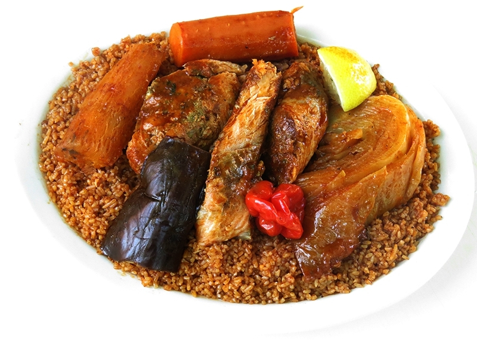

Yassa Poulet

Description
TPoulet Yassa (Yassa au Pouket) or Chicken Yassa. A Senegalese dish of chicken marinated with lemon or lime, Dijon mustard and in some recipes vinegar, simmered with sauteed onions.
Ingredients
- 4 bone-in skin-on chicken thighs
- 3-4 medium onions sliced
- 2 tablespoons dijon mustard
- 2 lemons juiced (add juice form 1 lemon for less sour yassa)
- 3 tablespoons of olive oil for marinade
- 1/2 habanero pepper seeds removed, finely diced
- 1 tablespoon minced garlic
- Salt and pepper as needed
- Water as needed
- 1/2 cup green olives optional
- Parsley for garnish optional
- Oil for frying
Steps
- Generously season your chicken with salt and pepper on all sides.
- In a large bowl, add your sliced onions and place your chicken thighs on top.
- In a separate smaller bowl add your lemon juice, minced garlic, dijon mustard, oil and finely diced hot pepper if using.
- Mix well and pour this marinade over your chicken and your onions.
- Toss well to coat onions and chicken in marinade. Cover with plastic wrap or lid and place mixture in your fridge to marinate for up to 12 hours.
- When read to cook, remove chicken from bowl, remove all the onions off the chicken and in a medium bottom pan or pot big enough for your yassa, add about 3 tablespoons of oil and sear the hicken on all sides until brown. You are not looking to cook the chicken hear, just get a nice brown colour to you want your heat to be relatively high.
- Remove your browned chicken from the pan and if there are any really burn pieces, remove from the oil but keep most of the the oil and drippings in the pot.
- Take your onions from the marinade (attempt to keep most of the liquid in the bowl you marinated the onions in). Place onions in the pot you seared your chicken in and sautee. Too much marinade in the pot at this stage will prevent he onions from browning and caramelizing.
- Brown your onions on low heat, stirring often for about 20 minutes. Taste onions and adjust seasoning. I usually don't have to add more salt if I generously seasoned at the beginning (while marinating)
- Add your chicken back into the pot, along with any juices from the rested chicken, your leftover marinate as well as about 1 cup of water to start.
- Cover and let simmer for about 10 minutes to make sure chicken finishes cooking. While it is simmering, stir periodically to make sure it doesn't burn. As the water reduces, it it very easy for the onions to start burning.
- Remove your lid and add green olives, add more water if necessary and simmer uncovered for about 5 more minutes until your chicken is saucy but not watery.